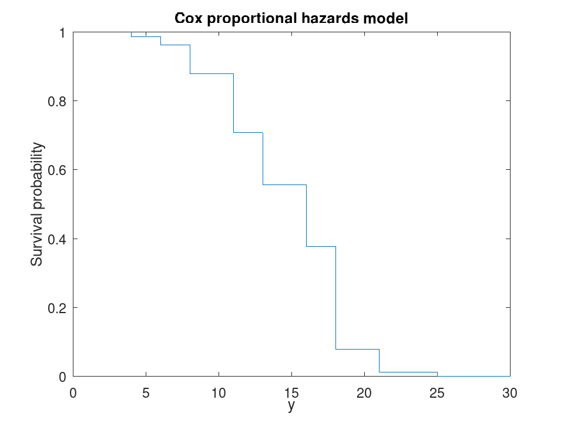
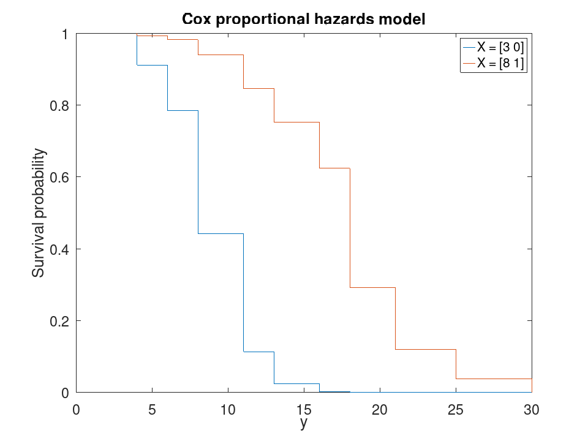
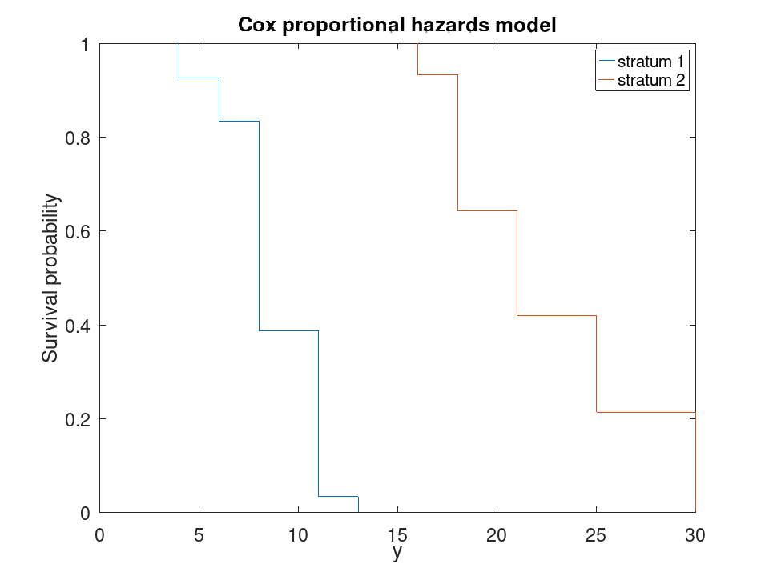

CoxModel
statistics: CoxModel
Cox proportional hazards regression model class.
A CoxModel object encapsulates a Cox proportional hazards model of a
survival time on one or more predictors, fitted by maximizing the Cox partial
likelihood. It is the object counterpart of coxphfit and is normally
created with the fitcox function.
The model states that an observation with predictor values x has hazard
$$ h(x, t) = h_0(t)\exp\left(\sum_{j=1}^{p} x_{j} b_j\right) $$
where h_0(t) is an unspecified baseline hazard. The model carries no constant term: any constant is absorbed into that baseline.
The most useful properties are Coefficients (a table of estimates,
standard errors, z-statistics and p-values), Hazard (the
estimated baseline cumulative hazard), LogLikelihood,
Residuals, and the three p-values LikelihoodRatioTestPValue,
ProportionalHazardsPValue and
ProportionalHazardsPValueGlobal. Fitted models support the
survival, hazardratio, coefci, linhyptest,
plotSurvival and discardResiduals methods.
A categorical predictor expands to indicator columns, one per level bar the
first, which the baseline hazard carries; the indicator columns are named
name_level and enter the default baseline as zero, while
a numeric predictor enters it as its mean.
ProportionalHazardsPValue is a Grambsch-Therneau test of each
coefficient against the mid-ranks of the event times, and
ProportionalHazardsPValueGlobal the same test taken over the whole
model. A small p-value is evidence that the hazard ratio moves with time,
which is what proportionality denies.
Deviations from MATLAB, all in naming. MATLAB derives the names
reported by a fitted model from three different places and they need not
agree with one another: with default predictor names its Formula
reads 'y ~ x1 + x2' in lower case while PredictorNames holds
'X1' and 'X2', and supplying 'PredictorNames'
changes ResponseName from 'y' to the name of the variable
passed as the response. Here the names are consistent by construction:
ResponseName is 'y' unless the data came from a table, the
Formula is built from PredictorNames and
ResponseName, and neither depends on which optional arguments were
given. Every fitted quantity agrees with MATLAB.
See also: fitcox, coxphfit, GeneralizedLinearModel, LinearModel
Source Code: CoxModel
The CoxModel class contains the following properties:
CoxModel.Coefficients is not documented.
CoxModel.NumPredictors is not documented.
CoxModel.LogLikelihood is not documented.
CoxModel.Hazard is not documented.
CoxModel.PredictorNames is not documented.
CoxModel.ResponseName is not documented.
CoxModel.Formula is not documented.
CoxModel.Baseline is not documented.
CoxModel.Stratification is not documented.
CoxModel.CoefficientCovariance is not documented.
CoxModel.StandardError is not documented.
CoxModel.Residuals is not documented.
CoxModel.ProportionalHazardsPValue is not documented.
CoxModel.ProportionalHazardsPValueGlobal is not documented.
CoxModel.LikelihoodRatioTestPValue is not documented.
CoxModel.VariableInfo is not documented.
The CoxModel class offers the following public methods:
CoxModel: mdl = CoxModel (X, T)
CoxModel: mdl = CoxModel (tbl, respvar)
CoxModel: mdl = CoxModel (…, Name, Value)
mdl = CoxModel (X, T) fits the model to the
n-by-p numeric predictor matrix X and the
n-by-1 vector of event times T. T may instead be an
n-by-2 matrix giving a (start, stop] interval of exposure,
the counting process form.
mdl = CoxModel (tbl, respvar) takes the data
from the table tbl, using the variable named respvar as the
response and every other variable as a predictor. A categorical
variable is encoded as indicator columns.
X must not contain a constant column: the model has no constant term, since any constant is absorbed into the baseline hazard.
The following Name/Value pairs are accepted:
| Name | Value |
|---|---|
"Baseline" | The X values at which the baseline hazard is computed, either a scalar or a 1-by-p vector. The default is the mean of each numeric predictor and zero for each indicator column of a categorical predictor, taken within each stratum. |
"Beta" | The starting value of the iteration, a vector
of length p. The default is 0.01 ./ std (X). |
"CategoricalPredictors" | The predictors to treat as
categorical, given as column indices, a logical vector, or a cell array
of predictor names. Table variables of class categorical are
detected without this argument. |
"Censoring" | A logical or 0/1 vector of length n, where 1 marks an observation right-censored at its recorded time. The default is a vector of zeros. |
"Frequency" | A vector of length n of non-negative values giving the number of observations each row represents, or a weight. The default is a vector of ones. |
"OptimizationOptions" | A structure of iteration
settings, as built by statset ("fitcox"). The fields used are
"MaxIter", "TolX" and "Display". |
"PredictorNames" | A cell array of p predictor
names. The default is "X1", "X2", and so on, or the
table variable names. |
"Stratification" | A vector of length n of stratum labels. Each stratum carries its own baseline hazard and its own risk sets, while the coefficients are shared across all of them. |
"TieBreakMethod" | The method of handling tied event
times, either "breslow" (default) or "efron". |
Fit a Cox proportional hazards model and read its coefficients
X = [2 0; 5 1; 3 0; 8 1; 4 0; 7 1; 6 0; 9 1; 5 0; 10 1]; T = [4; 6; 8; 11; 13; 16; 18; 21; 25; 30]; mdl = fitcox (X, T)
mdl =
Cox proportional hazards regression model:
y ~ X1 + X2
Coefficients:
2x4 table
Beta SE zStat pValue
________ ________ ________ _________
X1 -1.38861 0.527378 -2.63305 0.0084623
X2 4.38144 1.85374 2.36357 0.0180998
Log-likelihood: -8.80696
Likelihood ratio test vs. constant model: p-value = 0.001841
The survival function at the model's baseline
X = [2 0; 5 1; 3 0; 8 1; 4 0; 7 1; 6 0; 9 1; 5 0; 10 1]; T = [4; 6; 8; 11; 13; 16; 18; 21; 25; 30]; mdl = fitcox (X, T); [s, t] = survival (mdl); [t, s]
ans = 4.0000e+00 1.0000e+00 4.0000e+00 9.8524e-01 6.0000e+00 9.6212e-01 8.0000e+00 8.7779e-01 1.1000e+01 7.0722e-01 1.3000e+01 5.5559e-01 1.6000e+01 3.7705e-01 1.8000e+01 7.8737e-02 2.1000e+01 1.2405e-02 2.5000e+01 1.1494e-03 3.0000e+01 4.3804e-18
CoxModel: ci = coefci (obj)
CoxModel: ci = coefci (obj, level)
ci = coefci (obj) returns a two-column matrix with one
row per coefficient, holding the 95% confidence interval of each.
ci = coefci (obj, level) uses a
100 (1 - level)% interval. level must be a positive
scalar smaller than 1; it is a significance level, not a coverage.
X = [2 0; 5 1; 3 0; 8 1; 4 0; 7 1; 6 0; 9 1; 5 0; 10 1]; T = [4; 6; 8; 11; 13; 16; 18; 21; 25; 30]; mdl = fitcox (X, T);
One row per coefficient, 95% by default
ci = coefci (mdl);
table (mdl.Coefficients.Beta, ci(:,1), ci(:,2), ...
'VariableNames', {'Beta', 'Lower', 'Upper'}, ...
'RowNames', mdl.Coefficients.Properties.RowNames)
ans =
2x3 table
Beta Lower Upper
________ ________ _________
X1 -1.38861 -2.42225 -0.354968
X2 4.38144 0.74818 8.01471
X = [2 0; 5 1; 3 0; 8 1; 4 0; 7 1; 6 0; 9 1; 5 0; 10 1]; T = [4; 6; 8; 11; 13; 16; 18; 21; 25; 30]; mdl = fitcox (X, T);
0.01 asks for a 99% interval, which is the wider of the two
coefci (mdl, 0.05)
ans = -2.4223 -0.3550 0.7482 8.0147
coefci (mdl, 0.01)
ans = -2.747044 -0.030174 -0.393474 9.156362
X = [2 0; 5 1; 3 0; 8 1; 4 0; 7 1; 6 0; 9 1; 5 0; 10 1]; T = [4; 6; 8; 11; 13; 16; 18; 21; 25; 30]; mdl = fitcox (X, T);
Exponentiating turns a coefficient interval into one for the hazard ratio of a unit change. An interval covering 1 is one the data cannot tell from no effect
exp (coefci (mdl))
ans = 8.8722e-02 7.0120e-01 2.1132e+00 3.0251e+03
CoxModel: obj = discardResiduals (obj)
obj = discardResiduals (obj) returns the model with an
empty Residuals property. The residual table holds one row per
observation and is the largest thing a fitted model carries, so
discarding it makes a model that is only going to be used for prediction
considerably smaller. Nothing else about the model changes.
X = [2 0; 5 1; 3 0; 8 1; 4 0; 7 1; 6 0; 9 1; 5 0; 10 1]; T = [4; 6; 8; 11; 13; 16; 18; 21; 25; 30]; mdl = fitcox (X, T);
Seven residual types, one row per observation, is the largest thing a fitted model holds and the only part that grows with the data
size (mdl.Residuals)
ans = 10 7
mdl = discardResiduals (mdl); size (mdl.Residuals)
ans = 0 0
X = [2 0; 5 1; 3 0; 8 1; 4 0; 7 1; 6 0; 9 1; 5 0; 10 1]; T = [4; 6; 8; 11; 13; 16; 18; 21; 25; 30]; mdl = discardResiduals (fitcox (X, T));
A model kept for prediction alone loses nothing it needs
mdl.Coefficients
ans =
2x4 table
Beta SE zStat pValue
________ ________ ________ _________
X1 -1.38861 0.527378 -2.63305 0.0084623
X2 4.38144 1.85374 2.36357 0.0180998
hazardratio (mdl, X(1,:))
ans = 25.150
CoxModel: hr = hazardratio (obj, X)
CoxModel: hr = hazardratio (obj, X, S)
CoxModel: hr = hazardratio (…, "Baseline", B)
hr = hazardratio (obj, X) returns the hazard at
the predictor values X relative to the baseline the model was
fitted with, exp ((X - B) * b). X has one
row per evaluation point and is a numeric matrix, or a table when the
model was fitted from one.
hr = hazardratio (obj, X, S) gives the
stratum of each row of X, and is required when the model is
stratified, each stratum having its own baseline.
hr = hazardratio (…, "Baseline", B) evaluates
the ratio against the baseline B instead, either a scalar or a row
vector with one element per encoded predictor column.
X = [2 0; 5 1; 3 0; 8 1; 4 0; 7 1; 6 0; 9 1; 5 0; 10 1]; T = [4; 6; 8; 11; 13; 16; 18; 21; 25; 30]; mdl = fitcox (X, T);
A ratio above 1 is an observation at greater risk than the baseline, which by default is the mean of the predictors
hr = hazardratio (mdl, X);
table (X(:,1), X(:,2), hr, 'VariableNames', {'X1', 'X2', 'HazardRatio'})
ans =
10x3 table
X1 X2 HazardRatio
__ __ ___________
2 0 25.1499
5 1 31.2016
3 0 6.27294
8 1 0.484151
4 0 1.56461
7 1 1.94109
6 0 0.0973363
9 1 0.120758
5 0 0.390248
10 1 0.0301197
X = [2 0; 5 1; 3 0; 8 1; 4 0; 7 1; 6 0; 9 1; 5 0; 10 1]; T = [4; 6; 8; 11; 13; 16; 18; 21; 25; 30]; mdl = fitcox (X, T);
Against the origin rather than the mean. The coefficients do not change with the baseline; only what the ratio is relative to does
mdl.Baseline
ans = 5.9000 0.5000
hazardratio (mdl, X(1:3,:))
ans =
25.1499
31.2016
6.2729
hazardratio (mdl, X(1:3,:), 'Baseline', 0)
ans = 0.062211 0.077181 0.015517
X = [2 0; 5 1; 3 0; 8 1; 4 0; 7 1; 6 0; 9 1; 5 0; 10 1]; T = [4; 6; 8; 11; 13; 16; 18; 21; 25; 30]; mdl = fitcox (X, T);
Raising one predictor by one unit multiplies the hazard by exp (beta)
x0 = mdl.Baseline; x1 = x0 + [1, 0]; [hazardratio(mdl, x1), exp(mdl.Coefficients.Beta(1))]
ans = 0.2494 0.2494
X = [2 0; 5 1; 3 0; 8 1; 4 0; 7 1; 6 0; 9 1; 5 0; 10 1]; T = [4; 6; 8; 11; 13; 16; 18; 21; 25; 30]; S = [1; 1; 1; 1; 1; 2; 2; 2; 2; 2]; mdl = fitcox (X, T, 'Stratification', S);
Each stratum is centred on its own baseline, so the same predictor values give a different ratio in each
mdl.Baseline
ans = 4.4000 0.4000 7.4000 0.6000
[hazardratio(mdl, X(1,:), 1), hazardratio(mdl, X(1,:), 2)]
ans =
3.2897 62.2709
CoxModel: tbl = linhyptest (obj)
tbl = linhyptest (obj) returns a table with one row
per predictor, whose k-th row tests the hypothesis that the
coefficients of the k-th and every later predictor are jointly
zero. The Predictor column names the predictors the hypothesis
leaves in the model, so its first row reads "Empty Model" and
tests every coefficient at once, and its last row tests the last
coefficient alone, reproducing that coefficient’s own p-value.
Each test is a Wald test on the fitted model, not a refit.
X = [2 0 1; 5 1 3; 3 0 2; 8 1 5; 4 0 4; 7 1 6; 6 0 8; 9 1 7; 5 0 9; 10 1 10]; T = [4; 6; 8; 11; 13; 16; 18; 21; 25; 30]; mdl = fitcox (X, T);
Each row tests that the predictors it does not name are jointly zero, so the first row tests the whole model against no model at all
linhyptest (mdl)
ans =
3x2 table
Predictor pValue
_______________ _________
{'Empty Model'} 0.114265
{'X1' } 0.0667007
{'X1, X2' } 0.0409789
X = [2 0 1; 5 1 3; 3 0 2; 8 1 5; 4 0 4; 7 1 6; 6 0 8; 9 1 7; 5 0 9; 10 1 10]; T = [4; 6; 8; 11; 13; 16; 18; 21; 25; 30]; mdl = fitcox (X, T);
Its hypothesis leaves every other predictor in the model, which is what the coefficient table already reports
tbl = linhyptest (mdl); [tbl.pValue(end), mdl.Coefficients.pValue(end)]
ans = 0.040979 0.040979
X = [2 0 1; 5 1 3; 3 0 2; 8 1 5; 4 0 4; 7 1 6; 6 0 8; 9 1 7; 5 0 9; 10 1 10]; T = [4; 6; 8; 11; 13; 16; 18; 21; 25; 30]; mdl = fitcox (X, T);
The order of the predictors is the order of the test, so the table answers "does what follows add anything?" at each step. Reordering the columns of X asks a different question
linhyptest (mdl)
ans =
3x2 table
Predictor pValue
_______________ _________
{'Empty Model'} 0.114265
{'X1' } 0.0667007
{'X1, X2' } 0.0409789
linhyptest (fitcox (X(:,[3 2 1]), T))
ans =
3x2 table
Predictor pValue
_______________ ________
{'Empty Model'} 0.114265
{'X1' } 0.498289
{'X1, X2' } 0.279543
CoxModel: plotSurvival (obj)
CoxModel: plotSurvival (obj, X)
CoxModel: plotSurvival (obj, X, S)
CoxModel: h = plotSurvival (…)
plotSurvival (obj) draws the survival function at the
model’s baseline as a stairstep plot. plotSurvival (obj,
X) draws it at the predictor values X, one curve per row,
and S gives the stratum of each row when the model is stratified.
A stratified model with no X draws one curve per stratum.
h = plotSurvival (…) returns the handles of the
stairstep lines.
X = [2 0; 5 1; 3 0; 8 1; 4 0; 7 1; 6 0; 9 1; 5 0; 10 1]; T = [4; 6; 8; 11; 13; 16; 18; 21; 25; 30]; mdl = fitcox (X, T);
The curve steps down at every event time, and nowhere else: the model learns about survival only where something happened
plotSurvival (mdl);

X = [2 0; 5 1; 3 0; 8 1; 4 0; 7 1; 6 0; 9 1; 5 0; 10 1]; T = [4; 6; 8; 11; 13; 16; 18; 21; 25; 30]; mdl = fitcox (X, T);
Proportional hazards means the curves are powers of one another, so they cannot cross
plotSurvival (mdl, [3 0; 8 1]);
legend ({'X = [3 0]', 'X = [8 1]'});

X = [2 0; 5 1; 3 0; 8 1; 4 0; 7 1; 6 0; 9 1; 5 0; 10 1]; T = [4; 6; 8; 11; 13; 16; 18; 21; 25; 30]; S = [1; 1; 1; 1; 1; 2; 2; 2; 2; 2]; mdl = fitcox (X, T, 'Stratification', S);
Stratification is what to reach for when the baseline hazards differ: these two curves are under no obligation to be proportional
plotSurvival (mdl);
legend ({'stratum 1', 'stratum 2'});

CoxModel: s = survival (obj)
CoxModel: s = survival (obj, X)
CoxModel: s = survival (obj, X, S)
CoxModel: s = survival (…, Name, Value)
CoxModel: [s, T] = survival (…)
s = survival (obj) returns the survival probability at
the model’s baseline, evaluated at each row of the Hazard
property. s = survival (obj, X) evaluates it at
the predictor values X, and S gives the stratum of each row
when the model is stratified. For a stratified model s is a cell
array holding one column vector per curve.
[s, T] = survival (…) also returns the times the
probabilities refer to.
The following Name/Value pairs are accepted:
| Name | Value |
|---|---|
"Time" | The times at which to evaluate the survival function. The default is the model’s own event times. The baseline survival is interpolated linearly between them and raised to the hazard ratio of X. |
"ExtrapolationMethod" | How to evaluate a time outside
the model’s event times: "nearest" (default), "linear",
"next", "previous", or "none". "none"
returns NaN outside the range, as do "next" above it and
"previous" below it. |
X = [2 0; 5 1; 3 0; 8 1; 4 0; 7 1; 6 0; 9 1; 5 0; 10 1]; T = [4; 6; 8; 11; 13; 16; 18; 21; 25; 30]; mdl = fitcox (X, T);
Without predictor values the curve is that of an average observation
[s, t] = survival (mdl);
table (t, s, 'VariableNames', {'Time', 'Survival'})
ans =
11x2 table
Time Survival
____ ___________
4 1
4 0.985241
6 0.962116
8 0.877785
11 0.707219
13 0.555594
16 0.377049
18 0.0787367
21 0.0124051
25 0.0011494
30 4.38038e-18
X = [2 0; 5 1; 3 0; 8 1; 4 0; 7 1; 6 0; 9 1; 5 0; 10 1]; T = [4; 6; 8; 11; 13; 16; 18; 21; 25; 30]; mdl = fitcox (X, T);
The columns follow the rows of X, all on the one grid of event times
s = survival (mdl, X(1:3,:)); size (s)
ans = 11 3
s(1:4,:)
ans = 1.000000 1.000000 1.000000 0.688004 0.628798 0.910944 0.378589 0.299684 0.784848 0.037690 0.017125 0.441447
X = [2 0; 5 1; 3 0; 8 1; 4 0; 7 1; 6 0; 9 1; 5 0; 10 1]; T = [4; 6; 8; 11; 13; 16; 18; 21; 25; 30]; mdl = fitcox (X, T);
The baseline survival is interpolated linearly between the event times and then raised to the hazard ratio of the given predictors
survival (mdl, X(1,:), 'Time', [5; 12; 20])
ans = 5.1127e-01 9.5015e-06 1.7031e-37
X = [2 0; 5 1; 3 0; 8 1; 4 0; 7 1; 6 0; 9 1; 5 0; 10 1]; T = [4; 6; 8; 11; 13; 16; 18; 21; 25; 30]; mdl = fitcox (X, T);
The model knows nothing before t = 4 or after t = 30. 'nearest', the default, carries the end values outward; 'none' refuses to answer
tq = [1; 15; 40]; nearest = survival (mdl, 'Time', tq); none = survival (mdl, 'Time', tq, 'ExtrapolationMethod', 'none'); table (tq, nearest, none)
ans =
3x3 table
tq nearest none
__ ___________ ________
1 1 NaN
15 0.436564 0.436564
40 4.38038e-18 NaN
X = [2 0; 5 1; 3 0; 8 1; 4 0; 7 1; 6 0; 9 1; 5 0; 10 1]; T = [4; 6; 8; 11; 13; 16; 18; 21; 25; 30]; S = [1; 1; 1; 1; 1; 2; 2; 2; 2; 2]; mdl = fitcox (X, T, 'Stratification', S);
Each stratum carries its own baseline hazard, so the curves are returned separately, on their own event times
[s, t] = survival (mdl);
[t{1}, s{1}]
ans = 4.0000e+00 1.0000e+00 4.0000e+00 9.2567e-01 6.0000e+00 8.3461e-01 8.0000e+00 3.8775e-01 1.1000e+01 3.3930e-02 1.3000e+01 5.5295e-04
[t{2}, s{2}]
ans = 1.6000e+01 1.0000e+00 1.6000e+01 9.3273e-01 1.8000e+01 6.4272e-01 2.1000e+01 4.1964e-01 2.5000e+01 2.1387e-01 3.0000e+01 2.9932e-03
X = [2 0; 5 1; 3 0; 8 1; 4 0; 7 1; 6 0; 9 1; 5 0; 10 1]; T = [4; 6; 8; 11; 13; 16; 18; 21; 25; 30]; mdl = fitcox (X, T)
mdl =
Cox proportional hazards regression model:
y ~ X1 + X2
Coefficients:
2x4 table
Beta SE zStat pValue
________ ________ ________ _________
X1 -1.38861 0.527378 -2.63305 0.0084623
X2 4.38144 1.85374 2.36357 0.0180998
Log-likelihood: -8.80696
Likelihood ratio test vs. constant model: p-value = 0.001841
X = [2 0; 5 1; 3 0; 8 1; 4 0; 7 1; 6 0; 9 1; 5 0; 10 1]; T = [4; 6; 8; 11; 13; 16; 18; 21; 25; 30]; mdl = fitcox (X, T); [s, t] = survival (mdl); [t, s]
ans = 4.0000e+00 1.0000e+00 4.0000e+00 9.8524e-01 6.0000e+00 9.6212e-01 8.0000e+00 8.7779e-01 1.1000e+01 7.0722e-01 1.3000e+01 5.5559e-01 1.6000e+01 3.7705e-01 1.8000e+01 7.8737e-02 2.1000e+01 1.2405e-02 2.5000e+01 1.1494e-03 3.0000e+01 4.3804e-18